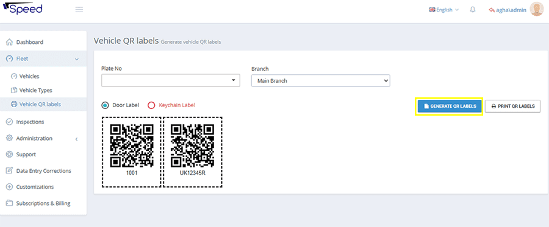

Vehicle QR Labels
QR labels help to save time and prevent from making mistakes. Once you have added vehicle details in the App, it will allow you to generate unique QR labels for each vehicle. Now, you can print that label and paste it either on the vehicle’s door or keyring. In the future, if you need to know about a vehicle, just scan the QR label with SCS App and your Smart Phone camera, all details would be displayed on the screen immediately.
